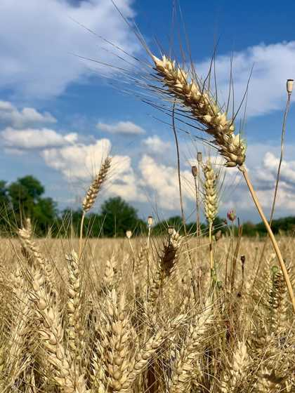
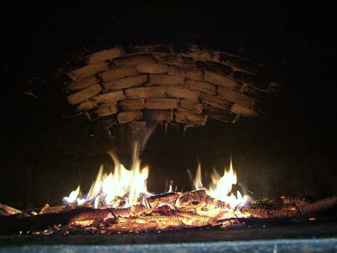
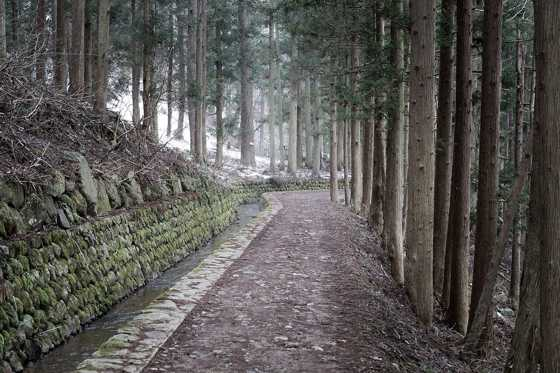
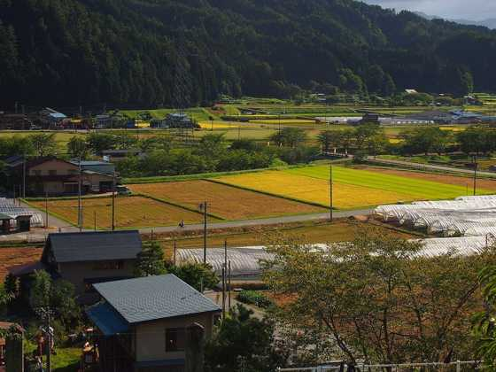
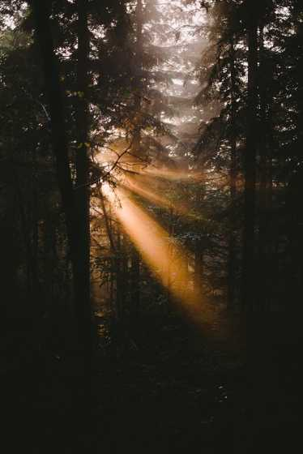

ちいさな石窯ぱん工房 えん
日本の粉と天然酵母を、木質ペレットの火でゆっくり焼き上げる。長谷寺のふもとの、週末だけのちいさなパン工房。
お店について
由来と想い
Instagramのプロフィールには、「日本の粉、天然酵母、木質ペレット石窯焼き」のパンを、季節の食材とともに届ける週末だけのパン屋と紹介されています。拠点は奈良県桜井市、長谷寺のある初瀬のあたりです。


粉・酵母・火という、ごくシンプルな素材と手間でパンを焼く。そのていねいさを、このページの語り口にしました。
店名「えん」の意味や由来は確認できていないため、このページでは触れていません。また、写真はすべてフリー素材のイメージで、店舗の実際の様子ではありません。

メニュー
確認できた範囲のみ。内容は準備中です
営業日: 週末のみ(Instagramの記載より)。営業時間・定休日・価格は準備中です。ご予約・お問い合わせはInstagramのDMで受け付けているとのことです。電話番号: 準備中


口コミ
以下は制作側が作成した「イメージ例」であり、実際のお客様の声ではありません
イメージ例
粉の香りがしっかりしていて、噛むほどに甘みが出ました。石窯で焼いたパンの香ばしさが印象的です。
イメージ例
週末の散策のついでに立ち寄りました。季節の素材を使ったパンが楽しみで、また行きたくなります。
イメージ例
小さなお店ですが、ていねいに焼かれているのが伝わりました。お土産にしたら家族にも好評でした。


アクセス
長谷寺のある初瀬の里
〒633-0112 奈良県桜井市初瀬2602-5
電話: 準備中
Instagram: @en_masumi




写真クレジット
- images/oven-flame.jpg「石窯の中で燃える炎」 / Beboplu / CC0(creativecommons.org)
- images/oven-brick.jpg「煉瓦の窯の内側と炎」 / Vinny Burgoo / CC BY-SA 3.0(creativecommons.org)
- images/sourdough.jpg「サワードウのパン」 / Fæ / CC BY-SA 4.0(creativecommons.org)
- images/baguettes.jpg「バゲット」 / jules / stonesoup / CC BY 2.0(creativecommons.org)
- images/rolls.jpg「かごに盛ったロールパン」 / Daniel Sone(米国NIH) / パブリックドメイン(creativecommons.org)
- images/scones.jpg「焼き菓子のスコーン」 / Kolforn / CC BY-SA 4.0(creativecommons.org)
- images/cookies.jpg「バタークッキー」 / sdnet01 / CC0(creativecommons.org)
- images/wheat-ears.jpg「麦の穂」 / Daniela M. / CC BY-SA 4.0(creativecommons.org)
- images/wheat-sunset.jpg「夕焼けの麦畑」 / Dreamy Pixel / CC BY 4.0(creativecommons.org)
- images/satoyama.jpg「里山の風景」 / Seth Vidal / CC BY-SA 2.0(creativecommons.org)
- images/mist-hills.jpg「霧のかかる丘」 / Lies Thru a Lens / CC BY 2.0(creativecommons.org)
- images/mountains.jpg「山並み」 / Yoshi Canopus / CC BY-SA 3.0(creativecommons.org)
- images/forest-path.jpg「森の小道」 / Yiannis Theologos Michellis / CC0(creativecommons.org)
- images/sunlight-trees.jpg「木漏れ日の木々」 / Dawid Sobolewski / CC0(creativecommons.org)
ライセンスの詳細は creativecommons.org をご覧ください。